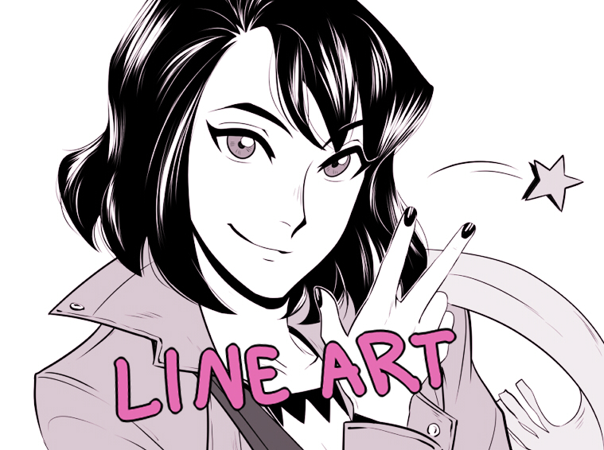
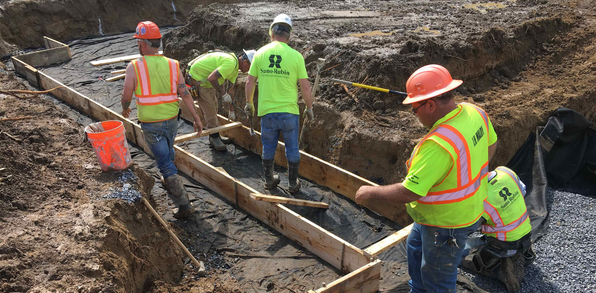
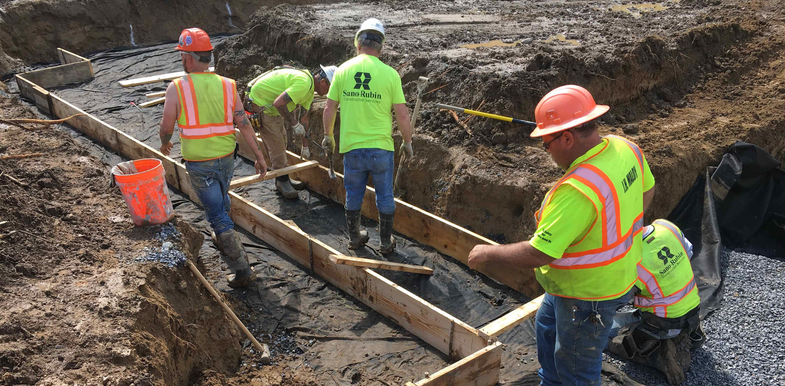

My vision is no complex one, it is as sime as I want to become the best illustrator than I can possible be. This is in the meaning that i want to reach my maximum potential, go as high as i can go.
My Mission statement is that currenty ave been on a journey to impove every aspect of my work and have gotten to a place i deem decent, but that is nowhere near where i plan on stopping. I want to keep going until I can look at the best of the best art and see myself on the same level as those illustrators and creators!
My first proffesion as it could be considered is in my art which is the field i attend the Institution Utech for. Though I am capable of doing illustration, animation, modelleing and a whole slew of things in the field of digital arts I find myself liking Illustating most of all.

At the time of this websites publishing, Illustration is my center focus profession!

A second proffession that ive picked up thanks to my father who works in this industry full-time, Carpentry is a bit of a family businnes that I enduldge in thanks to him. It has allowed for me to discover the innerworkings of the trade carpentry and it has come in handy both in contracted working as well as recreational work. As an example of this, the desk that I am currently using to creat this website I made myself using what I have learned in the trade.


Construction is the last proffession I have taken up with once again persuasion from my dad as he works in it as well. Tho i dont love it as much as illustration or carpentry, I still am more than capable of working my duties in this field. I have to say it is very messy but I kind of look at is as a second part of carpenty, like I'm building the house first in structure and layout before doign the wood working kinda though.
 

Those are the main the proffesions that I focus on, but there are more that I have done on the side such as gardening and office jobs but id rather not touch those again.